Visual Studio Code Tips and Tricks——VSCode技巧
“Tips and Tricks” lets you jump right in and learn how to be productive with Visual Studio Code. You’ll become familiar with its powerful editing, code intelligence, and source code control features and learn useful keyboard shortcuts. This topic goes pretty fast and provides a broad overview, so be sure to look at the other in-depth topics in Getting Started and the User Guide to learn more.
"技巧"使你直接进入并了解如何高效使用VSCode。你将熟悉它的强大编辑能力、代码智能提示和源代码控制功能，并且了解有用的键盘快捷键。这个主题快速的提供了一个宽泛的概述，所以一定要在开始和用户指南查看其它深入的主题来了解更多。
If you don’t have Visual Studio Code installed, go to the Download page. You can find platform specific setup instructions at Running VS Code on Linux, macOS, and Windows.
如果你没有安装VSCode，去下载页。你可以在在Linux上运行VSCode、macOS和Windows找到平台特定的安装说明。
Prefer a video? You can watch a recent Microsoft Build talk Visual Studio Code tips and tricks, which describes 20 tips and tricks for working productively with VS Code.
更喜欢视频？你可以观看一个最近的微软构建谈话VSCode技巧，描述了20个技巧来使用VSCode高效的工作。
Basics——基本
Getting started——开始
Open the Welcome page to get started with the basics of VS Code. Help > Welcome.
打开欢迎页，从VSCode基础开始。帮助 > 欢迎。

In the bottom right of the Welcome page, there is a link to the Interactive playground where you can interactively try out VS Code’s features. Help > Interactive Playground.
在欢迎页的右下角，有一个到交互广场的链接，在这你可以交互式的尝试VSCode功能。帮助 > 交互广场。
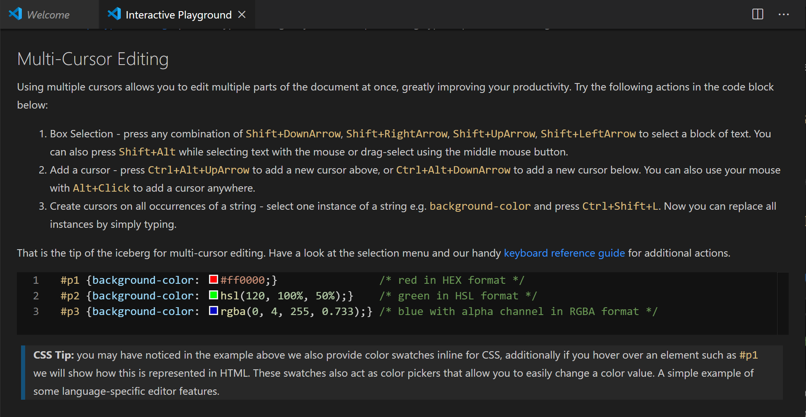
Command Palette——命令面板
Access all available commands based on your current context.
根据当前上下文访问所有可用命令。
Keyboard Shortcut: ⇧⌘P
键盘快捷键：⇧⌘P

Default keyboard shortcuts——默认键盘快捷键
All of the commands are in the Command Palette with the associated key binding (if it exists). If you forget a keyboard shortcut, use the Command Palette to help you out.
所有的命令在命令面板中，且和键绑定关联（如果存在的话）。如果你忘记了键盘快捷键，使用命令面板来帮助你。
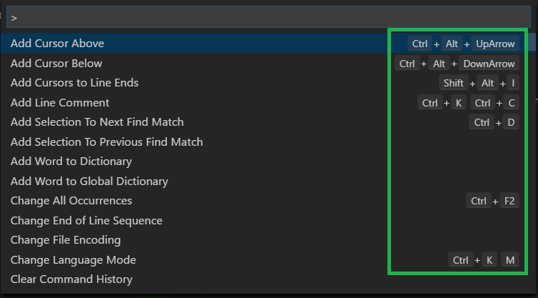
Keyboard reference sheets——键盘快捷键表单
Download the keyboard shortcut reference sheet for your platform (macOS, Windows, Linux).
下载各平台快捷键引用单(macOS、Windows、Linux)。
Quick Open——快速打开
Quickly open files.
快速打开文件。
Keyboard Shortcut: ⌘P
键盘快捷键: ⌘P

Tip: Type ? to view commands suggestions.
提示： 输入?来查看命令建议。
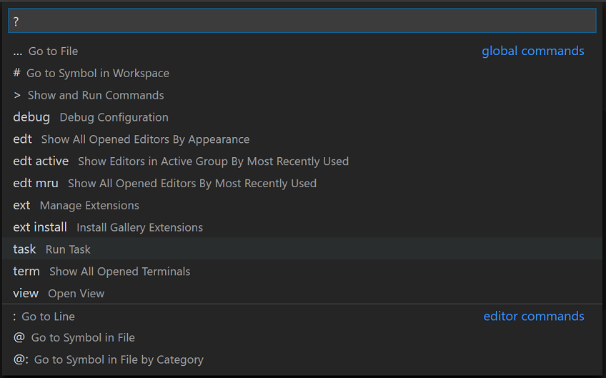
Typing commands such as edt and term followed by a space will bring up dropdown lists.
输入命令，比如edt和term后跟一个空格，将调出下拉列表。

Navigate between recently opened files——在最近打开的文件之间跳转
Repeat the Quick Open keyboard shortcut to cycle quickly between recently opened files.
重复快速打开快捷键可以快速的在最近打开的文件之间循环。
Open multiple files from Quick Open——在快速打开中打开多个文件
You can open multiple files from Quick Open by pressing the Right arrow key. This will open the currently selected file in the background and you can continue selecting files from Quick Open.
你可以从快速打开中打开多个文件，方法是按右箭头键。这将在后台打开当前选中的文件且你能继续在快速打开中选文件。
Navigate between recently opened folders and workspaces——在最近打开的文件夹和工作空间之间跳转
Open Recent
打开最近
Keyboard Shortcut: ⌃R
键盘快捷键：⌃R
Displays a Quick Pick dropdown with the list from File > Open Recent with recently opened folders and workspaces followed by files.
显示一个来自于文件 > 打开最近 的快速获取下拉列表,包含最近打开的文件夹和工作空间，其后跟有文件。
Command line——命令行
VS Code has a powerful command line interface (CLI) which allows you to customize how the editor is launched to support various scenarios.
VSCode有一个强大的命令行接口(CLI)，它使你能自定义如何启动编辑器来支持不同的场景。
Make sure the VS Code binary is on your path so you can simply type ‘code’ to launch VS Code. See the platform specific setup topics if VS Code is added to your environment path during installation (Running VS Code on Linux, macOS, Windows).
确保VSCode二进制文件在你的path中，这样你可以轻松的输入
code来启动VSCode。如果在安装期间VSCode被添加到path环境变量中，查看平台特定的安装主题来在Linux、macOS、Windows运行VSCode。
1 | # open code with current directory |
.vscode folder——.vscode文件夹
Workspace specific files are in a .vscode folder at the root. For example, tasks.json for the Task Runner and launch.json for the debugger.
特定的工作空间文件在跟下的.vscode文件下。比如，用于Task Runner的tasks.json和用于调试的launch.json。
Status Bar——状态栏
Errors and warnings——错误和警告
Keyboard Shortcut: ⇧⌘M
键盘快捷键：⇧⌘M
Quickly jump to errors and warnings in the project.
在工程中快速跳转到错误和警告。
Cycle through errors with F8 or ⇧F8
使用F8或⇧F8循环浏览错误。

You can filter problems either by type (‘errors’, ‘warnings’) or text matching.
你可以通过输入(‘errors’, ‘warnings’)或文本匹配来过滤问题。
Change language mode——切换语言模式
Keyboard Shortcut: ⌘K M
键盘快捷键：⌘K M

If you want to persist the new language mode for that file type, you can use the Configure File Association for command to associate the current file extension with an installed language.
如果你想为那种文件类型持续使用新语言模式，你可以使用命令的配置文件关联来使用安装的语言关联当前的文件扩展。
Customization——自定义
There are many things you can do to customize VS Code.
可以做许多事来自定义VSCode。
- Change your theme
切换主题 - Change your keyboard shortcuts
切换键盘快捷键 - Tune your settings
调整设置 - Add JSON validation
添加JSON验证 - Create snippets
创建代码片段 - Install extensions
安装扩展
Change your theme——切换你的主题
Keyboard Shortcut: ⌘K ⌘T
键盘快捷键：⌘K ⌘T
You can install more themes from the VS Code extension Marketplace.
你可以从VSCode扩展市场中安装更多主题。

Additionally, you can install and change your File Icon themes.
另外，你可以安装并切换你的文件图标主题。

Keymaps——按键映射
Are you used to keyboard shortcuts from another editor? You can install a Keymap extension that brings the keyboard shortcuts from your favorite editor to VS Code. Go to Preferences > Keymaps to see the current list on the Marketplace. Some of the more popular ones:
你是否习惯于使用其他编辑器的快捷键？你可以安装一个键盘映射扩展，这可以将你最喜爱的编辑器的快捷键带到VSCode。去偏好 > 键映射 查看当前市场上的列表。一些比较受欢迎的有：
- Vim
- Sublime Text Keymap
- Emacs Keymap
- Atom Keymap
- Brackets Keymap
- Eclipse Keymap
- Visual Studio Keymap
Customize your keyboard shortcuts——自定义你的键盘快捷键
Keyboard Shortcut: ⌃`
键盘快捷键：⌃`

You can search for shortcuts and add your own keybindings to the keybindings.json file.
你可以搜索快捷键并添加你自己的键绑定到keybindings.json文件中。

See more in Key Bindings for Visual Studio Code.
VSCode键绑定查看更多。
Tune your settings——调整你的设置
By default VS Code shows the Settings editor, you can find settings listed below in a search bar, but you can still edit the underlying settings.json file by using the Open Settings (JSON) command or by changing your default settings editor with the workbench.settings.editor setting.
VSCode默认展示设置编辑器，你可以在搜索栏中找到下面列出的设置，但是你仍然可以编辑底层的settings.json文件，方法是使用打开设置(JSON) 命令或者通过使用workbench.settings.editor设置来切换你的默认设置编辑器。
Open User Settings settings.json
打开用户设置settings.json
Keyboard Shortcut: ⌘,
键盘快捷键：⌘,
Change the font size of various UI elements
改变各种UI元素的字体大小
1 | // Main editor |
Change the zoom level
改变缩放等级
1 | "window.zoomLevel": 5 |
Font ligatures
字体连字
1 | "editor.fontFamily": "Fira Code", |
Tip: You will need to have a font installed that supports font ligatures. FiraCode is a popular font on the VS Code team.
建议： 你需要一个支持字体连字的安装字体。FiraCode是一个在VSCode组受欢迎的字体。
Auto Save
自动保存
1 | "files.autoSave": "afterDelay" |
You can also toggle Auto Save from the top-level menu with the File > Auto Save.
你也可以从顶级菜单中使用文件 > 自动保存来切换自动保存。
Format on save
保存格式化
1 | "editor.formatOnSave": true |
Format on paste
粘贴格式化
1 | "editor.formatOnPaste": true |
Change the size of Tab characters
改变Tab字符的大小
1 | "editor.tabSize": 4 |
Spaces or Tabs
空格还是Tab
1 | "editor.insertSpaces": true |
Render whitespace
显示空白
1 | "editor.renderWhitespace": "all" |
Whitespace characters are rendered by default in text selection.
在文本选中时默认显示空白字符。
Ignore files / folders
忽略文件/文件夹
Removes these files / folders from your editor window.
从你的编辑窗口中移除文件/文件夹。
1 | "files.exclude": { |
Remove these files / folders from search results.
总搜索结果中移除这些文件/文件夹。
1 | "search.exclude": { |
And many, many other customizations.
许多其它个性化。
Language specific settings——语言特定的设置
You can scope the settings that you only want for specific languages by the language identifier. You can find a list of commonly used language IDs in the Language Identifiers reference.
你可以通过语言标识符设置你想要的特定语言的设置。你可以在语言标识符找到一个通用的语言ID列表。
1 | "[languageid]": { |
Tip: You can also create language specific settings with the Configure Language Specific Settings command.
提示： 你也可以使用配置语言特定的设置命令创建语言特定设置。

Add JSON validation——添加JSON验证
Enabled by default for many file types. Create your own schema and validation in settings.json
对于许多文件类型是默认开启。在settings.json创建你自己的schema和验证。
1 | "json.schemas": [ |
or for a schema defined in your workspace
或者是在工作空间中定义的schema
1 | "json.schemas": [ |
or a custom schema
或者是自定义schema
1 | "json.schemas": [ |
See more in the JSON documentation.
在JSON文档中查看更多。
Extensions——扩展
Keyboard Shortcut: ⇧⌘X
键盘快捷键：⇧⌘X
Find extensions——发现扩展
- In the VS Code Marketplace.
在VSCode市场。 - Search inside VS Code in the Extensions view.
在VSCode内的扩展视图搜索。 - View extension recommendations
查看扩展建议。 - Community curated extension lists, such as awesome-vscode.
社区策划的扩展列表，比如令人惊叹的VSCode。
Install extensions——安装扩展
In the Extensions view, you can search via the search bar or click the More Actions (…) button to filter and sort by install count.
在扩展视图，你可以通过搜索栏或点击更多行为（…）按钮过滤和安装数量排序来搜索。
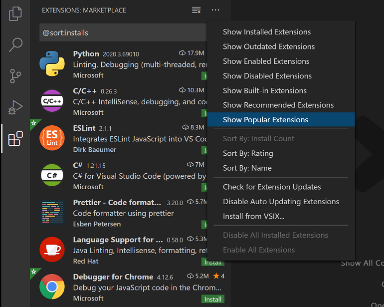
Extension recommendations——扩展建议
In the Extensions view, click Show Recommended Extensions in the More Actions (…) button menu.
在扩展视图，在更多行为（…）菜单按钮上点击展示推荐扩展。

Creating my own extension——创建自己的扩展
Are you interested in creating your own extension? You can learn how to do this in the Extension API documentation, specifically check out the documentation on contribution points.
你对创建自己的扩展感兴趣吗？你可以在扩展API文档中了解如何创建扩展，具体地可以查看有关贡献点的文档。
- configuration
配置 - commands
命令 - keybindings
键绑定 - languages
语言 - debuggers
调试器 - grammars
语法 - themes
主题 - snippets
代码片段 - jsonValidation
json验证
Files and folders——文件和文件夹
Integrated Terminal——集成终端
Keyboard Shortcut: ⌃`
键盘快捷键： ⌃`

Further reading:
深入阅读：
- Integrated Terminal documentation
集成终端文档。 - Mastering VS Code’s Terminal article
熟练掌握VSCode终端的文章
Toggle Sidebar——开关侧边栏
Keyboard Shortcut: ⌘B
键盘快捷键：⌘B

Toggle Panel——开关面板
Keyboard Shortcut: ⌘J
键盘快捷键：⌘J
Zen mode——禅模式
Keyboard Shortcut: ⌘K Z
键盘快捷键：⌘K Z

Enter distraction free Zen mode.
进入部分新的禅模式。
Press Esc twice to exit Zen Mode.
按Esc两次退出禅模式。
Side by side editing——并行编辑
Keyboard Shortcut: ⌘\
键盘快捷键：⌘\
You can also drag and drop editors to create new editor groups and move editors between groups.
你也可以拖动和删除编辑器，创建一个新的编辑器组并移动编辑器到组中。

Switch between editors——在编辑器之间切换
Keyboard Shortcut: ⌘1, ⌘2, ⌘3
键盘快捷键：⌘1, ⌘2, ⌘3

Move to Explorer window——移动到浏览器窗口
Keyboard Shortcut: ⇧⌘E
键盘快捷键：⇧⌘E
Create or open a file——创建或打开一个文件
Keyboard Shortcut: Ctrl+click (Cmd+click on macOS)
键盘快捷键：Ctrl+click (Cmd+click on macOS)
You can quickly open a file or image or create a new file by moving the cursor to the file link and using Ctrl+click.
你可以通过移动光标到文件链接上，使用Ctrl+click快速的打开一个文件或图片，或者创建一个新的文件。
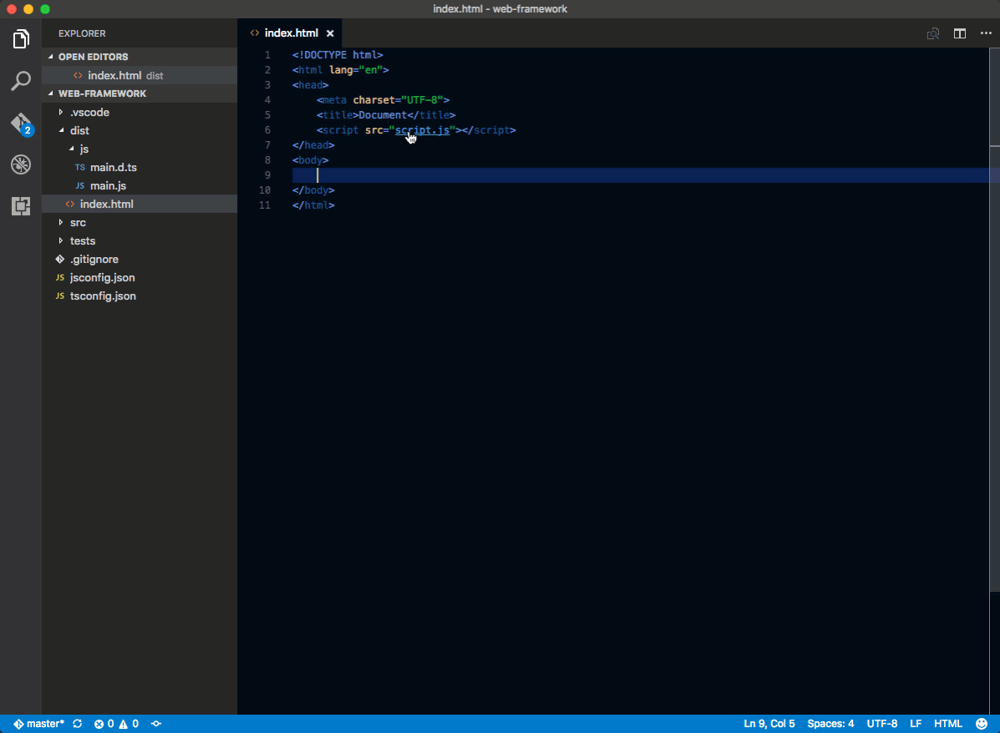
Close the currently opened folder——关闭当前打开的文件夹
Keyboard Shortcut: ⌘W
键盘快捷键：⌘W
Navigation history——浏览历史
Navigate entire history: ⌃Tab
浏览整个历史: ⌃Tab
Navigate back: ⌃-
返回: ⌃-
Navigate forward: ⌃⇧-
前进: ⌃⇧-
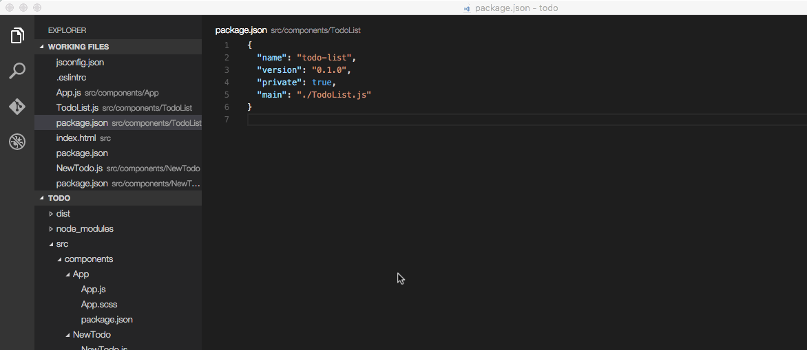
File associations——文件关联
Create language associations for files that aren’t detected correctly. For example, many configuration files with custom file extensions are actually JSON.
为没有被正确侦测到的文件创建语言关联。比如，许多带有自定义文件扩展名的配置文件实际上是JSON。
1 | "files.associations": { |
Preventing dirty writes——防止脏写
VS Code will show you an error message when you try to save a file that cannot be saved because it has changed on disk. VS Code blocks saving the file to prevent overwriting changes that have been made outside of the editor.
当你试图保存一个不能保存的文件(因为它在磁盘上已经改变了)时VSCode将为你展示一个错误信息，VSCode阻止保存文件来防止覆盖写入在编辑器外的改动。
In order to resolve the save conflict, click the Compare action in the error message to open a diff editor that will show you the contents of the file on disk (to the left) compared to the contents in VS Code (on the right):
为了解决保存冲突，在错误信息中点击比较动作打开一个比较编辑器，它展示了磁盘上的内容（左边）和VSCode上的内容（右边）相比：

Use the actions in the editor toolbar to resolve the save conflict. You can either Accept your changes and thereby overwriting any changes on disk, or Revert to the version on disk. Reverting means that your changes will be lost.
使用编辑器工具栏上的动作来解决保存冲突。你可以接受你的改变，因此将覆盖磁盘上的修改，或者反转到磁盘上的版本。反转意味着你的修改将被丢失。
Note: The file will remain dirty and cannot be saved until you pick one of the two actions to resolve the conflict.
注意： 直到你选择两个行为中的一个来解决冲突前，文件都将保持脏的状态且不能保存。
Editing hacks——编辑hack
Here is a selection of common features for editing code. If the keyboard shortcuts aren’t comfortable for you, consider installing a keymap extension for your old editor.
这儿有一个编辑代码的常见功能选择。如果看盘快捷键不适合你，考虑为你的老编辑器安装一个键映射扩展。
Tip: You can see recommended keymap extensions in the Extensions view with unassigned which filters the search to @recommended:keymaps.
提示：你可以在扩展视图使用unassigned查看推荐的键映射扩展，它将搜索过滤为@recommended:keymaps。
Multi cursor selection——多光标选中
To add cursors at arbitrary positions, select a position with your mouse and use kbstyle(Alt+Click) (kbstyle(Option+click) on macOS).
在任意位置添加光标，使用鼠标选择一个位置并使用Alt+Click (macOS上为Option+Click)。
To set cursors above or below the current position use:
要设置光标为当前位置的上面或者下面，请使用：
Keyboard Shortcut: ⌥⌘↑ or ⌥⌘↓
键盘快捷键：⌥⌘↑ 或 ⌥⌘↓

You can add additional cursors to all occurrences of the current selection with ⇧⌘L.
你可以添加附加光标到当前选中的所有出现的地方，方法是使用⇧⌘L。

Note: You can also change the modifier to
kbstyle(Ctrl/Cmd)for applying multiple cursors with theeditor.multiCursorModifiersetting . See Multi-cursor Modifier for details.
注意：你也可以使用
editor.multiCursorModifier设置改变修改器为Ctrl/Cmd来使用多光标。详细请查看多光标修改。
If you do not want to add all occurrences of the current selection, you can use ⌘D instead.
This only selects the next occurrence after the one you selected so you can add selections one by one.
如果你不想增加当前选中的出现项，你可以使用⌘D来代替。
这仅选中了在你选择的一个下一个的出现项，所以你可以一个一个的增加选中。

Column (box) selection——列（盒）选择
You can select blocks of text by holding kbstyle(Shift+Alt) (kbstyle(Shift+Option) on macOS) while you drag your mouse. A separate cursor will be added to the end of each selected line.
你可以在拖动鼠标时通过按住Shift+Alt(macOS为Shift+Option)选择文本块。一个分离的光标将被添加到每个选中行的末尾。

You can also use keyboard shortcuts to trigger column selection.
你也可以使用快捷键来触发列选择。
Vertical rulers——纵向尺
You can add vertical column rulers to the editor with the editor.rulers setting, which takes an array of column character positions where you’d like vertical rulers.
你可以使用editor.rulers设置添加纵向尺到编辑器，这在你想要纵向尺的地方采用了一系列列字符定位。
1 | { |

Fast scrolling——快速滚动
Pressing the Alt key enables fast scrolling in the editor and Explorers. By default, fast scrolling uses a 5X speed multiplier but you can control the multiplier with the Editor: Fast Scroll Sensitivity (editor.fastScrollSensitivity) setting.
按Alt键开启在编辑器和浏览器中快速滚动。快速滚动默认使用5倍的速度乘数，但是你可以使用Editor: Fast Scroll Sensitivity（editor.fastScrollSensitivity）设置控制这个乘数。
Copy line up / down——向上/下复制行
Keyboard Shortcut: ⇧⌥↑ or ⇧⌥↓
键盘快捷键：⇧⌥↑ 或者 ⇧⌥↓
The commands Copy Line Up/Down are unbound on Linux because the VS Code default keybindings would conflict with Ubuntu keybindings, see Issue #509. You can still set the commands
editor.action.copyLinesUpActionandeditor.action.copyLinesDownActionto your own preferred keyboard shortcuts.
命令Copy Line Up/Down在Linux上不受控制是因为VSCode默认的键绑定和Ubuntu的键绑定冲突，查看Issue #509。你仍然可以设置命令
editor.action.copyLinesUpAction和editor.action.copyLinesDownAction为你喜爱的键盘快捷键。

Move line up and down——移动到上/下一行
Keyboard Shortcut: ⌥↓ or ⌥↓
键盘快捷键：⌥↑或者⌥↓

Shrink / expand selection——收缩/扩张选中区域
Keyboard Shortcut: ⌃⇧⌘← or ⌃⇧⌘→
键盘快捷键：⌃⇧⌘← 或者 ⌃⇧⌘→
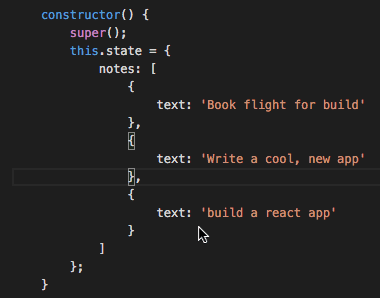
You can learn more in the Basic Editing documentation.
你可以在基础编辑文档了解跟多。
Go to Symbol in File——文件中跳转字符
Keyboard Shortcut: ⇧⌘O
键盘快捷键：⇧⌘O

You can group the symbols by kind by adding a colon, @:.
你可以通过添加冒号将符号按类别分组，@:。
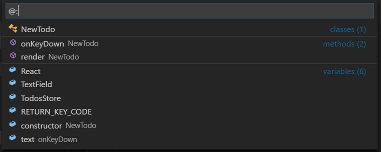
Go to Symbol in Workspace——在工作空间跳转符号
Keyboard Shortcut: ⌘T
键盘快捷键：⌘T

Outline view——大纲视图
The Outline view in the File Explorer (default collapsed at the bottom) shows you the symbols of the currently open file.
文件浏览器里的大纲视图（默认折叠在底部）展示了当前打开的文件的符号。
You can sort by symbol name, category, and position in the file and allows quick navigation to symbol locations.
你可以通过符号名字、类别、文件中的位置来排序，且允许快速导航到符号的位置。
Navigate to a specific line——导航到指定行
Keyboard Shortcut: ⌃G
键盘快捷键：⌃G
Undo cursor position——撤销光标位置
Keyboard Shortcut: ⌘U
键盘快捷键：⌘U
Trim trailing whitespace——修剪尾部的空白
Keyboard Shortcut: ⌘K ⌘X
键盘快捷键：⌘K ⌘X

Transform text commands——改变文本命令
You can change selected text to uppercase, lowercase, and title case with the Transform commands from the Command Palette.
你可以将选中的文本改变为大写、小写和首字母大写，方法是在命令面板中使用Transform命令。
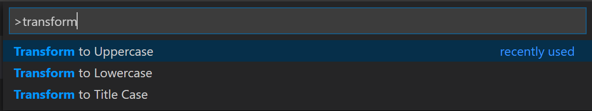
Code formatting——代码格式化
Currently selected source code: ⌘K ⌘F
当前选中的源代码：⌘K ⌘F
Whole document format: ⇧⌥F
整个文档格式化：⇧⌥F

Code folding——代码折叠
Keyboard Shortcut: ⌥⌘[ and ⌥⌘]
键盘快捷键：⌥⌘[和⌥⌘]

You can also fold/unfold all regions in the editor with Fold All (⌘K ⌘0) and Unfold All (⌘K ⌘J).
你也可以使用全部折叠（⌘K ⌘0）和全部展开（⌘K ⌘J）折叠/展开所有编辑器里的区域。
You can fold all block comments with Fold All Block Comments (⌘K ⌘/).
你也可以使用折叠所有块注释（⌘K ⌘/）折叠所有的块评论。
Select current line——选择当前行
Keyboard Shortcut: ⌘L
键盘快捷键：⌘L
Navigate to beginning and end of file——导航到文件开头和结尾
Keyboard Shortcut: ⌘↑ and ⌘↓
键盘快捷键：⌘↑ 和 ⌘↓
Open Markdown preview——打开Markdown预览
In a Markdown file, use
在Markdown文件中，使用
Keyboard Shortcut: ⇧⌘V
键盘快捷键：⇧⌘V

Side by side Markdown edit and preview——同时进行Markdown编辑和预览
In a Markdown file, use
在Markdown文件中，使用
Keyboard Shortcut: ⌘K V
键盘快捷键：⌘K V
The preview and editor will synchronize with your scrolling in either view.
预览和编辑器将和你的任一视图中的滚动同步。

IntelliSense——智能感知
⌃Space to trigger the Suggestions widget.
⌃Space可触发建议小部件。

You can view available methods, parameter hints, short documentation, etc.
你可以查看可用的方法、参数提示、简短文档等等。
Peek——一瞥
Select a symbol then type ⌥F12. Alternatively, you can use the context menu.
选择一个符号然后输入⌥F12。或者，你可以使用上下文菜单。

Go to Definition——跳到定义
Select a symbol then type F12. Alternatively, you can use the context menu or kbstyle(Ctrl+click) (kbstyle(Cmd+click) on macOS).
选择一个符号然后输入F12。或者，你可以使用上下文菜单或Ctrl+click (macOS上为Cmd+click)。

You can go back to your previous location with the Go > Back command or ⌃-.
你可以使用 Go > back 命令或者⌃-返回到你之前的位置。
You can also see the type definition if you press kbstyle(Ctrl) (kbstyle(Cmd) on macOS) when you are hovering over the type.
当你悬停在类型上时，如果你按Ctrl (macOS上为Cmd)也可以查看类型定义。
Go to References——跳到引用
Select a symbol then type kb(editor.action.goToReferences). Alternatively, you can use the context menu.
选择一个符号然后输入kb(editor.action.goToReferences)。或者你可以使用上下文菜单。
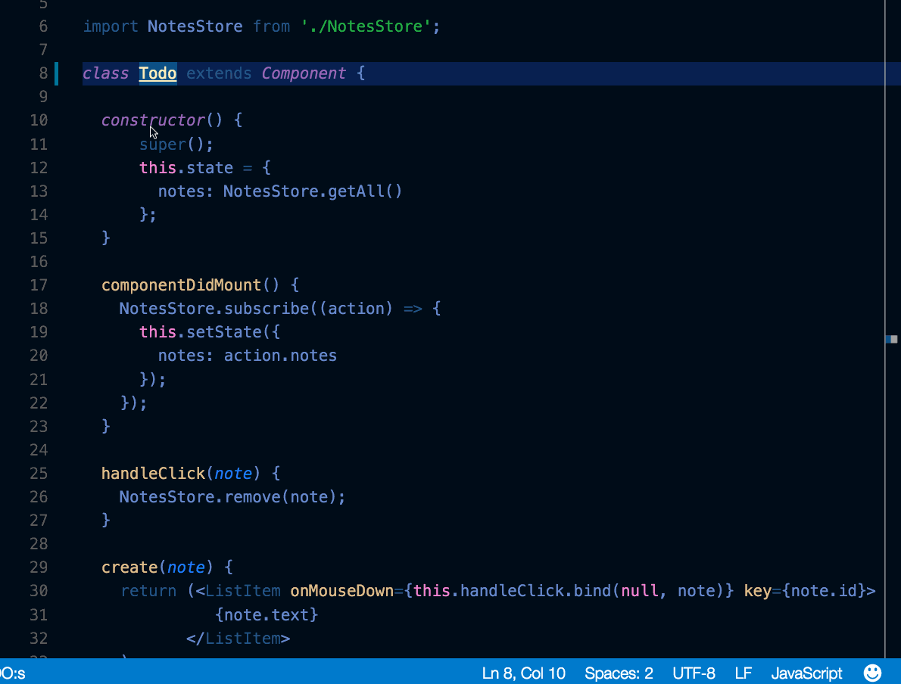
Find All References view——查找所有的引用视图
Select a symbol then type kb(references-view.findReferences) to open the References view showing all your file’s symbols in a dedicated view.
选择一个符号然后输入kb(references-view.findReferences)来打开引用视图，这在一个专用的视图中展示了所有的文件符号。
Rename Symbol——重命名符号
Select a symbol then type kb(editor.action.rename). Alternatively, you can use the context menu.
选择一个符号然后输入kb(editor.action.rename)。或者，你可以使用上下文菜单。

Search and modify——搜索和修改
Besides searching and replacing expressions, you can also search and reuse parts of what was matched, using regular expressions with capturing groups. Enable regular expressions in the search box by clicking the Use Regular Expression .* button (⌥⌘R) and then write a regular expression and use parenthesis to define groups. You can then reuse the content matched in each group by using $1, $2, etc. in the Replace field.
除了搜索和替换表达式，你也可以使用带有捕获组的正则表达式搜索和重用被匹配的部分。用过点击使用正则表达式.*按钮（⌥⌘R）开启搜索框的正则表达式，然后写如一个正则表达式并使用圆括号来定义组。之后你可以通过在替换字段上使用$1、$2在重用每个组的匹配的内容。
.eslintrc.json
Install the ESLint extension. Configure
your linter however you’d like. Consult the ESLint specification for details on its linting rules and options.
安装ESLint扩展。随心所欲的配置你的linter。关于静态分析的规则和选项，详细请查看ESLint说明。
Here is configuration to use ES6.
这有一个使用ES6的配置。
1 | { |
package.json
See IntelliSense for your package.json file.
查看智能感知来了解你的package.json文件。

Emmet syntax——Emmet语法
Support for Emmet syntax.
支持Emmet语法.

Snippets——代码块
Create custom snippets——创建自定义代码块
File > Preferences > User Snippets (Code > Preferences > User Snippets on macOS), select the language, and create a snippet.
文件 > 设置 > 用户代码块（macOS上为Code > 设置 > 用户代码块），选择语言并创建一个代码块。
1 | "create component": { |
See more details in Creating your own Snippets.
在创建你自己的代码块查看更多细节。
Git integration——Git集成
Keyboard Shortcut: ⌃⇧G
键盘快捷键：⌃⇧G
Git integration comes with VS Code “out-of-the-box”. You can install other SCM providers from the Extension Marketplace. This section describes the Git integration but much of the UI and gestures are shared by other SCM providers.
Git集成伴随VSCode开箱即用。你可以从扩展市场安装其他的SCM支持。这部分描述了Git集成，但是大部分UI和手势被其它的SCM支持共享。
Diffs——比较
From the Source Control view, select a file to open the diff.
从源代码控制视图中选择一个文件来打开比较。

Alternatively, click the Open Changes button in the top right corner to diff the current open file.
或者，点击右上角的打开变化按钮来比较当前打开的文件。
Views
视图
The default view for diffs is the side by side view.
默认比较视图是并列视图。
Toggle inline view by clicking the More Actions (…) button in the top right and selecting Toggle Inline View.
通过点击右上角的更多行为（…）按钮并选择切换内联视图，可以切换内联视图。

If you prefer the inline view, you can set "diffEditor.renderSideBySide": false.
如果你更喜欢内联视图，你可以设置"diffEditor.renderSideBySide": false。
Review pane
审查窗格
Navigate through diffs with F7 and ⇧F7. This will present them in a unified patch format.
Lines can be navigated with arrow keys and pressing Enter will jump back in the diff editor and the selected line.
使用F7 和 ⇧F7浏览差异。这将以一个统一的块的形式呈现它们。
可使用箭头键浏览行，按Enter将调回到差异编辑器和选中行。
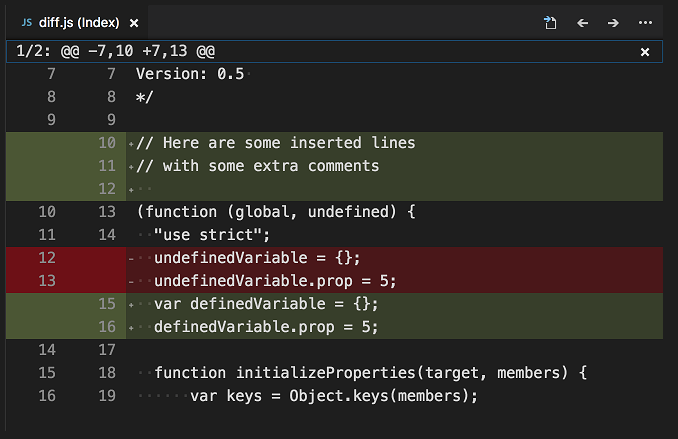
Edit pending changes
编辑待定的改变
You can make edits directly in the pending changes of the diff view.
你可以直接在差异视图的待定修改中直接编辑。
Branches——分支
Easily switch between Git branches via the Status Bar.
通过状态栏简单的在Git分支之间切换。

Staging——暂存
Stage file changes
暂存文件修改
Hover over the number of files and click the plus button.
悬在文件的数字上并单击加号按钮。
Click the minus button to unstage changes.
单击减法按钮来撤销修改。

Stage selected
暂存选中的
Stage a portion of a file by selecting that file (using the arrows) and then choosing Stage Selected Ranges from the Command Palette.
通过选择文件（使用箭头），然后从命令面板中选择暂存选中范围。
Undo last commit——撤销上次提交
Click the (…) button and then select Undo Last Commit to undo the previous commit. The changes are added to the Staged Changes section.
点击(…)按钮然后选择撤销上次提交撤销之前的提交。这些修改被添加到暂存的修改区域。

See Git output——查看Git输出
VS Code makes it easy to see what Git commands are actually running. This is helpful when learning Git or debugging a difficult source control issue.
VSCode可以轻松的查看是什么Git命令实际在运行。当了解Git或调试一个困难的源代码控制问题时，这是有益的。
Use the Toggle Output command (kb(workbench.action.output.toggleOutput)) and select Git in the dropdown.
使用Toggle Output命令（⇧⌘U），在下拉列表中选择Git。
Gutter indicators——装订线指示器(每一行前面表示修改的指示器)
View diff decorations in editor. See documentation for more details.
查看编辑器中的差异装饰。查看文档了解更多。

Resolve merge conflicts——解决合并冲突
During a merge, go to the Source Control view (⌃⇧G) and make changes in the diff view.
在合并期间，去源代码控制视图（⌃⇧G），并在差异视图中作出修改。
You can resolve merge conflicts with the inline CodeLens which lets you Accept Current Change, Accept Incoming Change, Accept Both Changes, and Compare Changes.
你可以使用内联的CodeLens来解决合并冲突，它可以使用接受当前修改、接受到来的修改、接受所有修改和比较修改。
Set VS Code as default merge tool——设置VSCode作为默认合并工具
1 | git config --global merge.tool vscode |
Set VS Code as default diff tool——设置VSCode为默认的比较工具
1 | git config --global diff.tool vscode |
Debugging——调试
Configure debugger——配置调试器
Open the Command Palette (⇧⌘P) and select Debug: Open launch.json, which will prompt you to select the environment that matches your project (Node.js, Python, C++, etc). This will generate a launch.json file. Node.js support is built-in and other environments require installing the appropriate language extensions. See the debugging documentation for more details.
打开命令面板（⇧⌘P）并选择调试：打开launch.json，这将提示你选择匹配你工程的环境（Node.js、Python、C++等）。这将生成launch.json文件。Node.js的支持是内置的，而其他环境要求安装合适的语言扩展。查看调试文档了解更多。

Breakpoints and stepping through——断点和单步调试
Place breakpoints next to the line number. Navigate forward with the Debug widget.
放置断点到行号的旁边。使用调试小部件往前导航。

Data inspection——数据查看
Inspect variables in the Run panels and in the console.
在运行面板和控制台中查看变量。

Logpoints——日志点
Logpoints act much like breakpoints but instead of halting the debugger when they are hit, they log a message to the console. Logpoints are especially useful for injecting logging while debugging production servers that cannot be modified or paused.
日志点运作很像断点，但是当它被点击时不会停止调试器，而是将信息记录到控制台中。当调试不能被修改或者暂停的生产服务时，对于注入日志来说日志点尤其有用。
Add a logpoint with the Add Logpoint command in the left editor gutter and it will be displayed as a “diamond” shaped icon. Log messages are plain text but can include expressions to be evaluated within curly braces (‘{}’).
使用Add Logpoint命令在左边的编辑器槽中增加日志点，它将显示为钻石形状的图标。日志信息是纯文本但是可以在卷括号(‘{}’)里包含计算表达式。

Task runner——任务运行
Auto detect tasks——自动侦查任务
Select Terminal from the top-level menu, run the command Configure Tasks, then select the type of task you’d like to run.
This will generate a tasks.json file with content like the following. See the Tasks documentation for more details.
选择顶级菜单中的终端，运行命令配置任务，然后选择你想要运行的任务类型。这将生成一个内容如下面的tasks.json文件，查看任务文档了解更多。
1 | { |
There are occasionally issues with auto generation. Check out the documentation for getting things to work properly.
自动生成偶尔有问题。查看文档使事情正常工作。
Run tasks from the Terminal menu——从终端菜单中运行任务
Select Terminal from the top-level menu, run the command Run Task, and select the task you want to run. Terminate the running task by running the command Terminate Task
选择顶级菜单中的终端，运行命令运行任务，选择你想运行的任务。通过运行命令终止任务来终止运行的任务。

Define keyboard shortcuts for tasks——定义任务快捷键
You can define a keyboard shortcut for any task. From the Command Palette (⇧⌘P), select Preferences: Open Keyboard Shortcuts File, bind the desired shortcut to the workbench.action.tasks.runTask command, and define the Task as args.
你可以给任意任务定义快捷键。从命令面板（⇧⌘P）中选择设置：打开快捷键文件，绑定想要的快捷键到workbench.action.tasks.runTask命令，并定义Task为args。
For example, to bind kbstyle(Ctrl+H) to the Run tests task, add the following:
比如，绑定Ctrl+H到运行测试任务，添加如下：
1 | { |
Run npm scripts as tasks from the Explorer——从浏览器中作为任务来运行npm脚本

From the explorer you can open a script in the editor, run it as a task, and launch it with the node debugger (when the script defines a debug option like --inspect-brk). The default action on click is to open the script. To run a script on a single click, set npm.scriptExplorerAction to “run”. Use the setting npm.exclude to exclude scripts in package.json files contained in particular folders.
你可以从浏览器打开一个编辑中的脚本，作为一个任务来运行，使用node debugger来运行（当脚本定义了一个想-inspect-brk的调试选项时）。点击的默认行为是打开脚本。设置npm.scriptExplorerAction到"run"来通过单击运行脚本。使用设置npm.exclude来排除包含在特殊文件夹里的package.json文件。
With the setting npm.enableRunFromFolder, you can enable to run npm scripts from the File Explorer’s context menu for a folder. The setting enables the command Run NPM Script in Folder… when a folder is selected. The command shows a Quick Pick list of the npm scripts contained in this folder and you can select the script to be executed as a task.
设置npm.enableRunFromFolder，你能够从文件夹的文件浏览器的上下文菜单来运行npm脚本。当文件夹被选中时，这个设置会开启命令Run NPM Script in Folder…。这个命令展示了一个包含在文件夹中的npm脚本快速选择列表,你可以选择一个脚本作为一个任务来运行。
Portable mode——便携模式
VS Code has a Portable mode which lets you keep settings and data in the same location as your installation, for example, on a USB drive.
VSCode有一个便携模式，这使你可以保存设置和数据在和安装同样的位置，比如，在U盘中。
Insiders builds——内部构建
The Visual Studio Code team uses the Insiders version to test the latest features and bug fixes of VS Code. You can also use the Insiders version by downloading it here.
VSCode团队使用内部版本来测试最新的VScode功能和bug修复。你也可以通过这里下载使用内部版本。
- For Early Adopters - Insiders has the most recent code changes for users and extension authors to try out.
对于早期的采纳者 —— 对于用户和扩展作者来说，内部人士有最新的代码修改可以尝试。 - Frequent Builds - New builds every day with the latest bug fixes and features.
频繁的构建 —— 每天的带有最新bug修复和功能的新版本。 - Side-by-side install - Insiders installs next to the Stable build allowing you to use either independently.
并行安装 —— 接近于稳定版本的内部人士版本，允许你独立的使用任意一个版本。